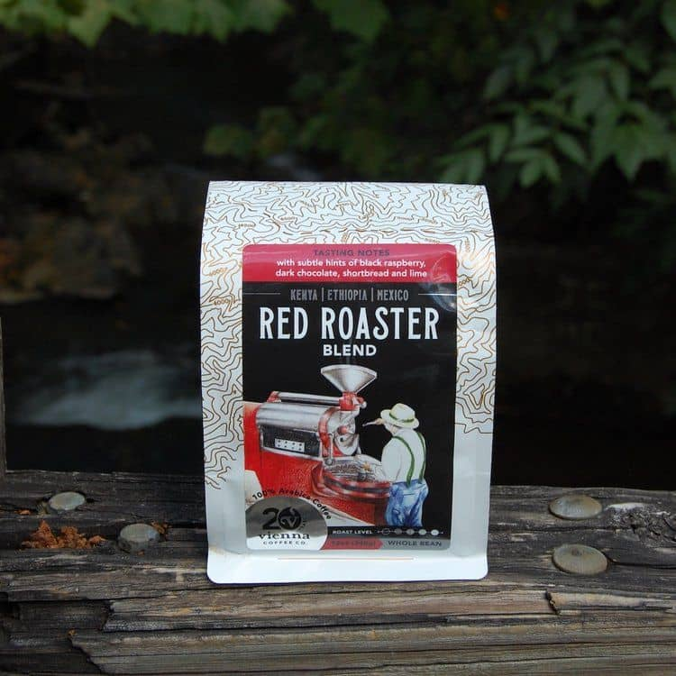

RED ROASTER is a coffee blend that is known for its bold and rich flavor. According to the manufacturer, the blend is made from high-quality Arabica beans sourced from different regions around the world, including South America, Central America, and Africa. The beans are roasted in small batches to ensure optimal flavor and freshness.
